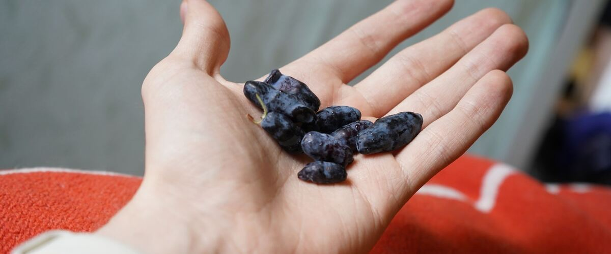

When to plant honeyberries in Seattle and Tacoma, WA
Plant honeyberry bushes in Seattle and Tacoma Mar 1 – Apr 26.
- Difficulty
- Easy
- Sun
- Full sun; part shade east of the Cascades
- Spacing
- 4 to 5 feet apart
- Planting depth
- Same depth as in the pot
- Frost
- Hardy perennial; comes back every year
- First harvest
- A few berries in year two or three; good crops by year four or five
Why these dates
Seattle and Tacoma's typical last spring frost is March 2. As a hardy perennial, this crop doesn't need to wait for that date. In the west-side valleys, though, the soil usually isn't ready to work until about March 1.
West-side valleys. The Willamette Valley, Puget Sound and southern Oregon valleys. Long frost-free seasons, but soil stays cold and wet into May, so warm crops wait for warm soil, not just the last frost.
How to grow honeyberries in Seattle and Tacoma
- Pick a sunny spot with soil that drains well, and mix in an inch or two of compost.
- Plant honeyberry bushes Mar 1 – Apr 26, 4 to 5 feet apart. Same depth as in the pot.
- Plant two compatible varieties that bloom together. Mulch well and water through the first two summers; after that they need very little.
- Harvest: Wait until the berries are purple-blue inside as well as outside, about a week after they turn blue. Taste first: underripe ones are sour.
Key numbers
- Below -40°FCold hardiness
- 5.5–7.5Soil pH
- Year 4–5First full crops
- BirdsBiggest risk
Top care tip: Net the bushes in late spring, because birds take the berries the moment they color.
Growing notes
What makes the difference in Northwest gardens, in plain language.
The earliest berry of the year
Honeyberries (also called haskap) are a blue-fruited honeysuckle from cold northern regions. The bushes bloom in late winter, and the flowers shrug off frosts that would ruin other fruit. Berries ripen in late spring, a couple of weeks before the first strawberries. They taste like a mix of blueberry and raspberry with a tart edge.
Pollination partners
A single honeyberry bush sets little or no fruit. Plant at least two different varieties that bloom at the same time; nurseries list which ones pair up. Early bees and bumblebees do the pollinating, so a site that gets winter sun helps.
Easy care
Unlike blueberries, honeyberries aren't fussy about soil pH and grow in most garden soils that drain well. Mulch, water through the first two summers and prune lightly in late winter once bushes are a few years old, removing old, weak or crossing stems. Net them before the berries color; birds love them.
Common questions
When is the last frost in Seattle and Tacoma, WA?
Typically March 2. In 9 years out of 10, frost is over by March 23. These are 1991–2020 NOAA climate normals for Seattle-Tacoma International Airport.
Is it too late to plant honeyberries in Seattle and Tacoma?
The spring planting window runs through April 26. Potted plants can still go in later if you water them faithfully through their first summer. Fall planting also works well here.
How long until I can pick honeyberries?
A few berries in year two or three; good crops by year four or five. Wait until the berries are purple-blue inside as well as outside, about a week after they turn blue. Taste first: underripe ones are sour.
What do honeyberries taste like?
Most people describe a mix of blueberry and raspberry, sometimes with a slightly tart finish. Flavor varies by variety and ripeness.
Why don't my honeyberries have fruit?
Usually they're too young or have no compatible partner nearby. Plant two varieties that bloom together, and give them three to five years.
Are honeyberries the same as other honeysuckles?
No. Only blue honeysuckle varieties sold for fruit are edible. Many ornamental honeysuckles have berries that should not be eaten.
Also plant in Seattle and Tacoma around the same time
Planting dates for honeyberries in nearby areas
- Everett, WA Mar 1 – Apr 26
- Olympia, WA Mar 18 – May 13
- Kent, Renton and Auburn, WA Mar 1 – Apr 26
- Bremerton and Port Orchard, WA Mar 1 – Apr 26
- Shelton, WA Mar 16 – May 11
- Portland, OR Mar 1 – Apr 26
Full planting calendar for Seattle and Tacoma · Honeyberries in every city